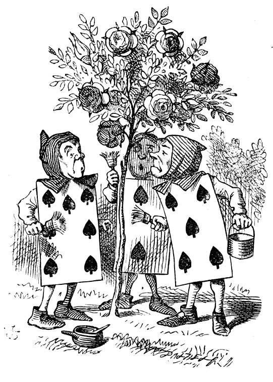

Ah…ggplot ! All those wonderful pictures and graphs, that Alice might have relished!
Metaphors, aesthetics, geometries…and pictures !! ggplot seems to equate ravens to writing desks in its syntax…and out come graphs!!
And colours: Wes Anderson! Tim Burton! The Economist… and many others!!
George Lakoff and Mark Johnson, Metaphors We Live By, https://www.youtube.com/watch?v=lYcQcwUfo8c
Wickham and Grolemund, R for Data Science, ggplot chapter: https://r4ds.had.co.nz/data-visualisation.html
CMDLineTips, 10 Tips to Customize Text Color, Font, Size in ggplot2 with element_text(), https://cmdlinetips.com/2021/05/tips-to-customize-text-color-font-size-in-ggplot2-with-element_text/
CMDLineTips, How to write a simple custom ggplot theme from scratch, https://cmdlinetips.com/2022/05/how-to-write-a-simple-custom-ggplot-theme-from-scratch/
Asha Hill @ mode.com, 12 Extensions to ggplot2 for More Powerful R Visualizations, https://mode.com/blog/r-ggplot-extension-packages/
Emil Hvitfeldt, ggplot Trial and Error, https://www.emilhvitfeldt.com/post/2018-06-12-ggplot2-trial-and-error-us-trade-data/
Yihan Wu, Mapping ggplot geoms and aesthetic parameters, ( An interactive view of which aesthetic parameters work with which ggplot geom!! ) https://www.yihanwu.ca/post/geoms-and-aesthetic-parameters/